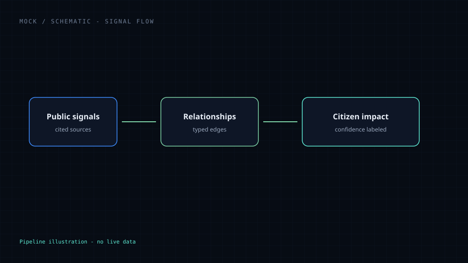

Relationships first
Events matter because of what they connect — routes, inputs, institutions, and households.
Global Signals
About · Experimental
A relationship intelligence platform — not a news website, not financial advice. This page explains the mission. The live experience is the intelligence dashboard.
Mission
When a port slows, a cable is cut, a harvest fails, or a policy shifts, the effects rarely stay where they started. Global Signals exists to connect public signals into calm, sourced understanding — so people can follow the path from world event to daily consequence without panic or partisan theater.
Purpose
Global Signals explores how geopolitics, trade, infrastructure, policy, weather, cyber events, conflict, and economics ripple through industries and eventually affect citizens. It shows structure and evidence — not ranked headlines or trades.
Philosophy & boundaries
Events matter because of what they connect — routes, inputs, institutions, and households.
Claims need citations, dates, and confidence. Empty boards stay empty.
Explain why a distant signal might change prices, access, safety, or services nearby.
No engagement ranking, no doom scroll, no invented breaking alerts.
No tips, no portfolio guidance, no implied trading edge — literacy only.
Missing data stays empty or unavailable — never fabricated live theater.
Illustrations on this page are labeled schematics. They do not show live events or fabricated data.
Why Relationships Matter
Trade lanes, energy grids, weather systems, cyber dependencies, and policy decisions sit in a web. Understanding everyday impact means tracing those links — not treating each headline as an island.

Signal path
The product story is a calm pipeline: observe public signals, map relationships with evidence, then explain plausible everyday effects — always labeling confidence and unknowns.

How Global Signals Works
Geopolitics, trade, infrastructure, weather, conflict, energy, cyber events, and policy — from citable public sources.
Link events to routes, sectors, institutions, and regions without inventing edges.
Show plausible downstream effects on supply chains, industries, and citizens — with confidence and unknowns labeled.
Present evidence and structure. Never automate fear or pretend certainty.
Why Citizens Should Care
Prices, medicine availability, power reliability, travel, insurance, and local jobs often move because of systems most people never see. Global Signals aims to make those links understandable — so civic curiosity has a calm place to stand.

What you can use today
Global Signals is Experimental on Side Trails. The primary entry is the intelligence dashboard. Curated datasets are honestly labeled sample/demo; empty boards stay empty.
Named concepts without a dedicated studio (Waypoint’s Take route, Supply Chains route, Scenario Explorer route) point back to these live modules instead of dead ends. Architecture notes: docs/GLOBAL-SIGNALS-ARCHITECTURE.md